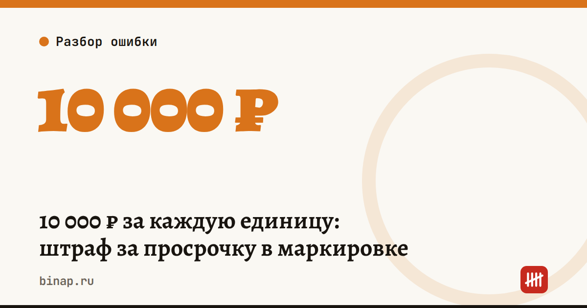

10 000 ₽ за каждую единицу: штраф за просрочку в маркировке

С 1 сентября 2026 года в КоАП действует новая часть 4 статьи 14.43 (закон от 02.05.2026 № 120-ФЗ). Она наказывает за продажу маркированного товара с истёкшим сроком годности, если «Честный знак» уже передал запрет на продажу.
Коротко
- Штраф для ИП — 10 000 ₽, для организации — 20 000 ₽ за каждую единицу товара.
- Штрафуют не за просрочку на полке, а за продажу после сигнала системы мониторинга о запрете.
- Сигнал приходит на кассу, если работает разрешительный режим: касса проверяет код перед продажей.
- Десять просроченных единиц у ИП — 100 000 ₽, у компании — 200 000 ₽.
- Главная защита — не отключать проверку кодов на кассе и регулярно проверять сроки на полке.
Сроки, изменения и разборы для ИП и самозанятых — каждое утро в Telegram и MAX. Подпишитесь, чтобы не пропустить.
Сколько
| Кто | Штраф |
|---|---|
| ИП | 10 000 ₽ за каждую единицу товара |
| Организация | 20 000 ₽ за каждую единицу товара |
Когда штрафуют
Если продавец продал товар после того, как система мониторинга («Честный знак») передала информацию о запрете продажи. То есть касса получает сигнал, а продажа всё равно проходит — например, кассир пробил товар вручную в обход проверки или проверка на кассе отключена.
Как работает разрешительный режим
- Кассир сканирует код DataMatrix на упаковке.
- Кассовая программа отправляет код на проверку в систему маркировки.
- Система отвечает: можно продавать или нельзя — например, истёк срок годности, код выведен из оборота или заблокирован.
- При запрете касса не должна пробивать товар.
Для молочной продукции важно и другое: по данным «Ведомостей», с 1 ноября 2026 года для молочки со сроком годности более 40 дней вводится партионный учёт в системе маркировки. Проверьте, что ваша учётная и кассовая программа его поддерживают.
Почему это дорого: расчёт
Расчёт редакции: магазин у дома — ИП. На полке остались 6 пачек творога и 4 бутылки кефира с истёкшим сроком. Если все 10 единиц продали после запрета, штраф — 10 × 10 000 = 100 000 ₽. Для ООО — 200 000 ₽. Это больше месячной прибыли многих небольших магазинов.
Что сделать
- Проверьте, что касса и кассовая программа поддерживают разрешительный режим и не пробивают товар, если пришёл запрет. Если не уверены — спросите поставщика кассовой программы.
- Не отключайте проверку кодов на кассе «чтобы не тормозила очередь».
- Запретите кассирам ручной ввод товара в обход сканирования маркированных кодов.
- Заведите еженедельную проверку сроков годности на полке и уценку товаров за 2–3 дня до окончания срока.
- Списывайте просрочку и выводите коды из оборота в «Честном знаке», чтобы остатки в системе совпадали с полкой.
Какие товары уже под маркировкой и что меняется для мастеров и самозанятых — в статье самозанятым запрещают продавать маркированные товары. Все материалы по теме — в разделе Маркировка.
Частые вопросы
Какой штраф за продажу просроченного маркированного товара? С 1 сентября 2026 года — 10 000 ₽ для ИП и 20 000 ₽ для организации за каждую единицу товара (ч. 4 ст. 14.43 КоАП).
Оштрафуют, если просрочка просто стоит на полке? Эта норма наказывает за продажу после того, как система мониторинга передала запрет. Но за просрочку на полке могут быть другие санкции по санитарным правилам — не держите её в торговом зале.
Что делать, если касса не получает ответ от системы? Уточните у поставщика кассовой программы, как настроен режим при сбоях связи, и не продавайте товар, который система уже пометила запрещённым.